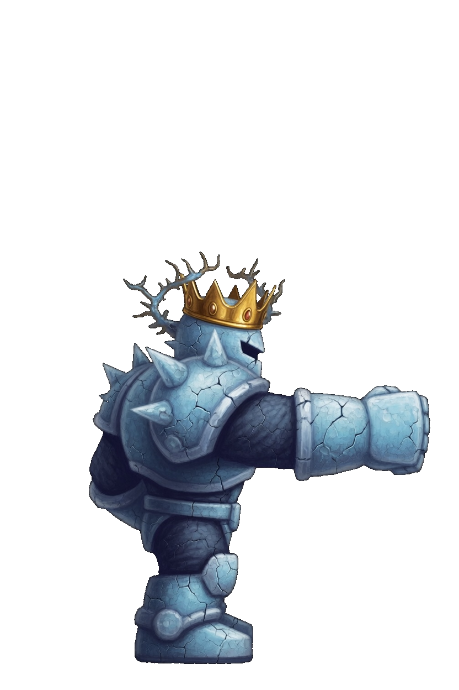
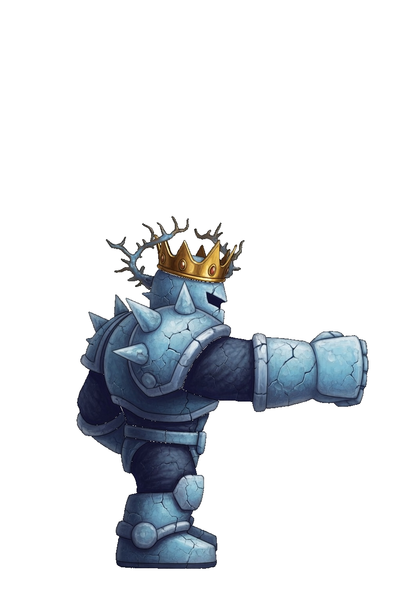
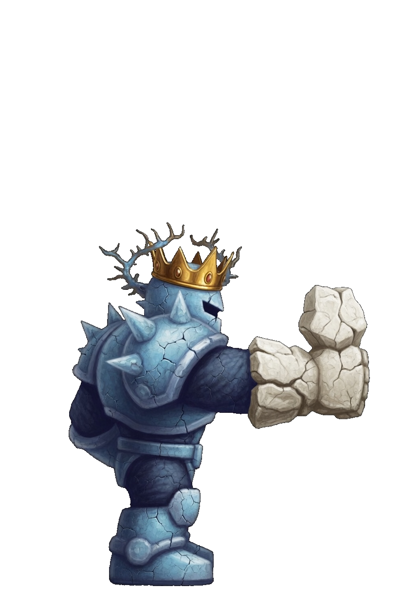
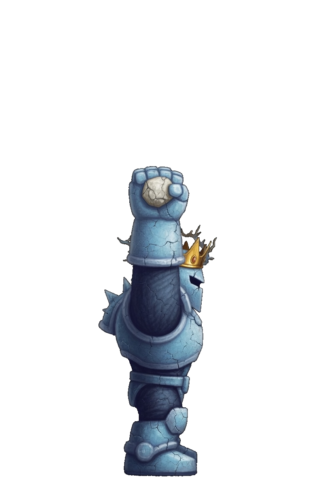
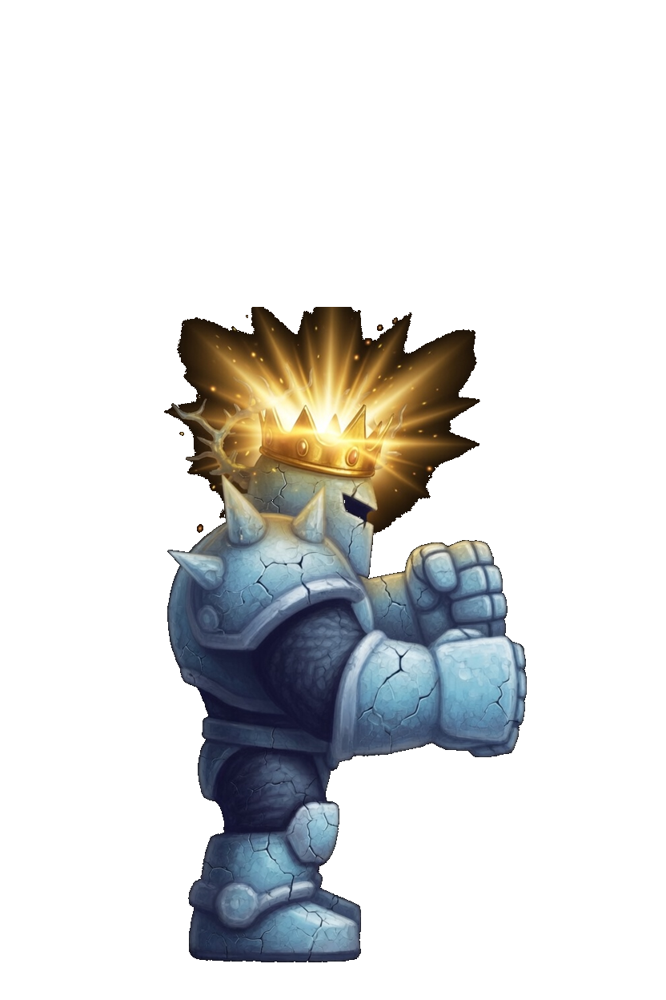
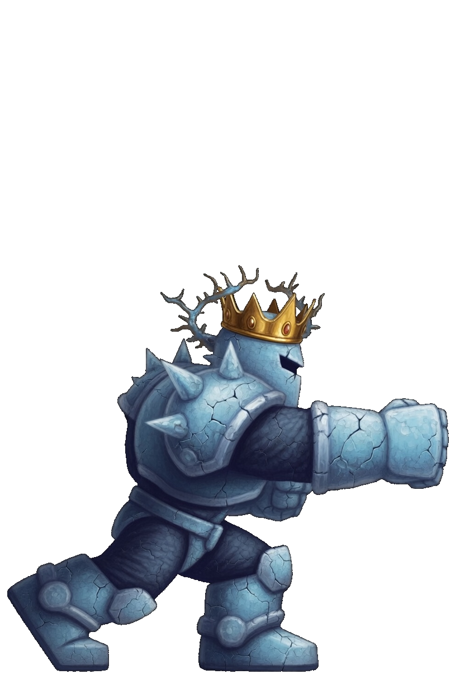
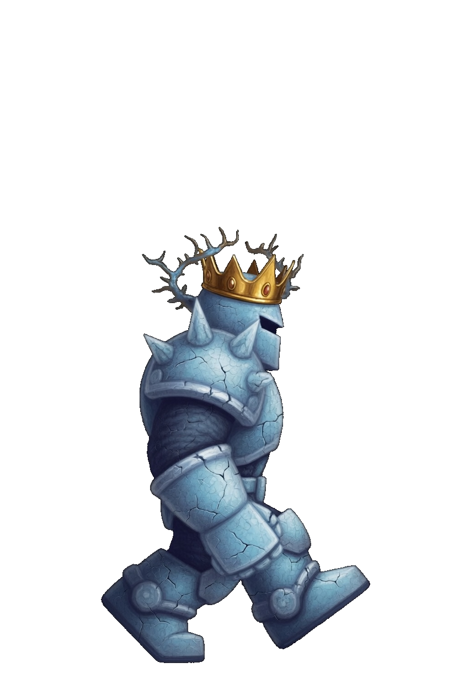
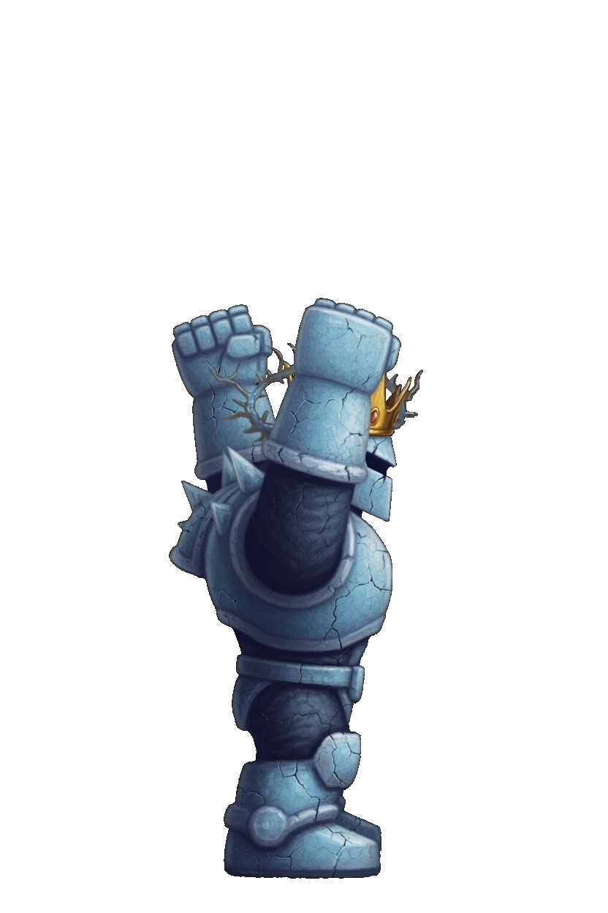

Crown · Nexus Guardian
This card is the only pose list. A later frame has to match one of these keys. Native facing is right. The whole sprite flips. Pale stone armor and a gold crown. The feet are the foot line. Crown is a fist, so the corner step is Close. There is no move named Dash and no Slip key. Regal Fist, Regal Volley, Lob Stone, and Decree keep those book names. Hurler keeps its own Lob Stone picture.
| Book | Value |
|---|---|
| Basic | Regal Fist · range 1.8 |
| Body | 1125 health · 36 damage · 0.62 attacks/s · speed 1.9 · armor 6 · range 1.8 · mana 110 · regen 9 |
| Crit / cooldown | 0.10 crit · 0.90 cooldown scale |
| Cards | Might · Bulwark · Heart |
| Moves | Regal Volley · Lob Stone · Decree |
| Stride | Close · a fist · 30s · cost 8 |
What stays off the body
- Regal Fist is the leading fist. The ring on the foe is the cut.
- Regal Volley keeps that book name. The shells in the air are stones.
- Lob Stone keeps that book name. Hurler's throw stays Hurler's.
- Decree is the crown flare. The pull on the foe is the blast.
Keys

Idle
Still crown, fist forward, both feet on the foot line.

Regal Fist
Idle, then the fist punches, then idle. 0.50s.

Regal Volley
Idle, then the arm cocks with one stone, then idle. 0.50s.

Lob Stone
Idle, then one stone is overhead, then idle. 0.50s.

Decree
Idle, then the crown flares, then idle. 0.52s.

Close
A lunge toward the right, then idle. 0.35s. Corner step only.

Walk
Idle, then one stride. 0.72s. The lifted foot stays on the leg.
Death
One rubble pile in the lower portion. The crown stays in the pile. 1.55s.

Win
Both fists rise. The feet stay down. 1.15s.